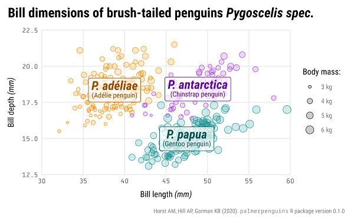
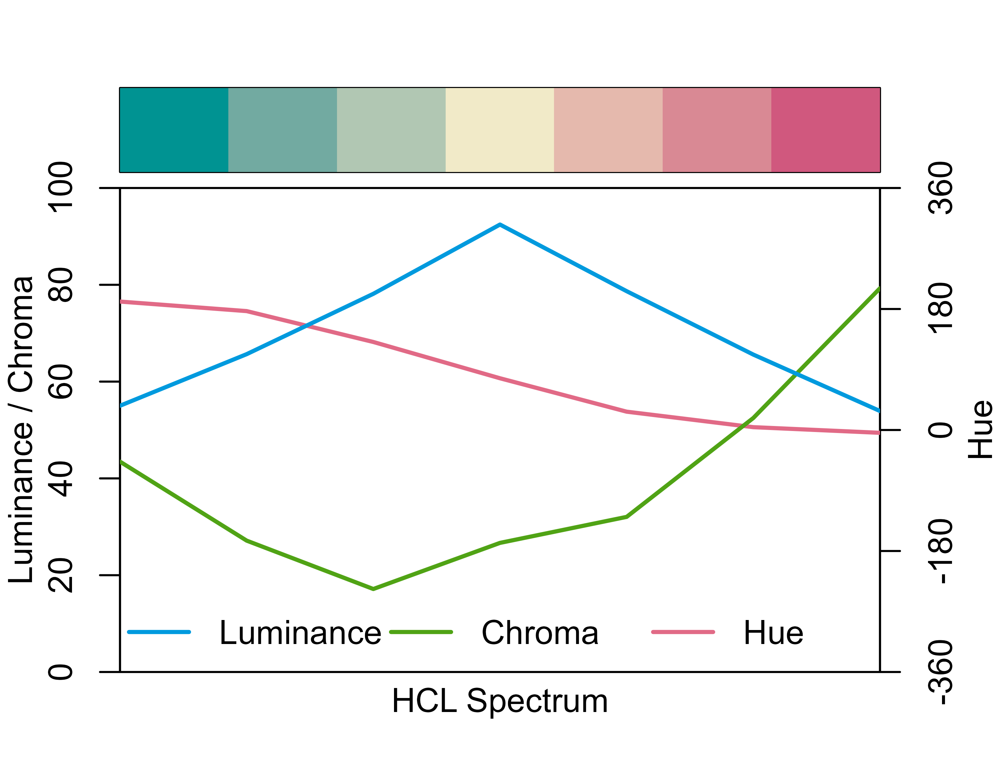

Schedule
Day 1
Monday, July 25, 2022
| Time | Module | |
|---|---|---|

|
09:00 - 09:30 | Introduction |

|
09:30 - 10:30 |
Concepts of the {ggplot2} Package Pt. 1:Data, Aesthetics, and Layers + Misc Stuff |
| 10:30 - 11:00 | Coffee break | |
|
|
11:00 - 12:00 |
Concepts of the {ggplot2} Package Pt. 1:Continued |

|
12:00 - 12:30 |
Concepts of the {ggplot2} Package Pt. 2:Facets, Scales, and Coordinate System |
| 12:30 - 13:30 | Lunch break | |
|
|
13:30 - 14:30 |
Concepts of the {ggplot2} Package Pt. 2:Facets, Scales, and Coordinate System (Continued) |
| 15:00 - 15:30 | Coffee break | |

|
15:30 - 17:00 | Data Communication |
No matching items
Day 2
Tuesday, July 26, 2022
| Time | Module | |
|---|---|---|
|  | 09:00 - 10:30 | Labels and Annotations |
| 10:30 - 11:00 | Coffee break | |
|  | 11:00 - 12:30 | Working with Colors |
| 15:00 - 15:30 | Lunch break | |

|
15:30 - 17:00 | Layouts and Composition |
| 15:00 - 15:30 | Coffee break | |
| 15:30 - 17:00 | Group Project |
No matching items